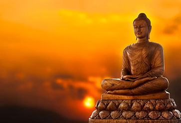

Even after all this time, I reminisce, still, about the most gruelling 10 days of my life I've never been in. One might wonder how could 'reminisce' and 'most gruelling' could be in the same sentence. Oxymoron indeed! It's been. It was one of those experiences where you feel you were torn to shreds emotionally every single second you've been in but would greatly miss and await for the next time to arrive for roller coaster the ride of emotions again.
No! I'm not talking about the same feel you get while going back to school after a long and eventful summer vacation. It's neither the change of landscape that gives the urge nor the boredom of the present one. And not even the escape from the burden that is reality and enter into a fantasy realm no worries can hurt us. It's the infinite amount of undiscovered emotions inside that are waiting to be unearthed; waiting to be felt.
It might sound overly vague but the truth is it can't be simply expressed in words. Without further ado, let me jump into the details of my first time visit into that amazing place.

Vipassana, which means to see things as they really are, is one of India's most ancient techniques of meditation. It was rediscovered by Gautama Buddha more than 2500 years ago and was taught by him as a universal remedy for universal ills, i.e., An Art Of Living. This non-sectarian technique aims for the total eradication of mental impurities and the resultant highest happiness of full liberation.
Vipassana is a way of self-transformation through self-observation. It focuses on the deep interconnection between mind and body, which can be experienced directly by disciplined attention to the physical sensations that form the life of the body, and that continuously interconnect and condition the life of the mind. It is this observation-based, self-exploratory journey to the common root of mind and body that dissolves mental impurity, resulting in a balanced mind full of love and compassion.
Life becomes characterized by increased awareness, non-delusion, self-control and peace.
What Vipassana is not:
- It is not a rite or ritual based on blind faith.
- It is neither an intellectual nor a philosophical entertainment.
- It is not a rest cure, a holiday, or an opportunity for socializing.
- It is not an escape from the trials and tribulations of everyday life.
What Vipassana is:
- It is a technique that will eradicate suffering.
- It is a method of mental purification which allows one to face life's tensions and problems in a calm, balanced way.
- It is an art of living that one can use to make positive contributions to society.
I took up a 10 day course on Dhamma Setu centre in Chennai. For more information, please go over their website link here Dhamma Org